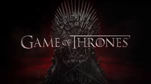

Based on the book series by George R. R. Martin entitled "A Song of Ice and Fire". Game of Thrones is my favorite TV show.
Actresses:
- Emilia Clarke (Daenerys Targaryen)
- Terminator: Genisys
- Dom Hemingway
- Lena Headey (Cersei Lannister)
- Terminator: The Sarah Connor Chronicles
- 300
- Natalie Dormer (Margaery Tyrell)
- The Hunger Games: Mocking Jay
- Elementary
Actors:
- Peter Dinklage (Tyrion Lannister)
- X-Men: Days of Future Past
- Elf
- Kit Harington (Jon Snow)
- Pompeii
- Seventh Son
- Iain Glen (Jorah Mormont)
- Lora Croft: Tomb Raider
- Resident Evil: Extinction